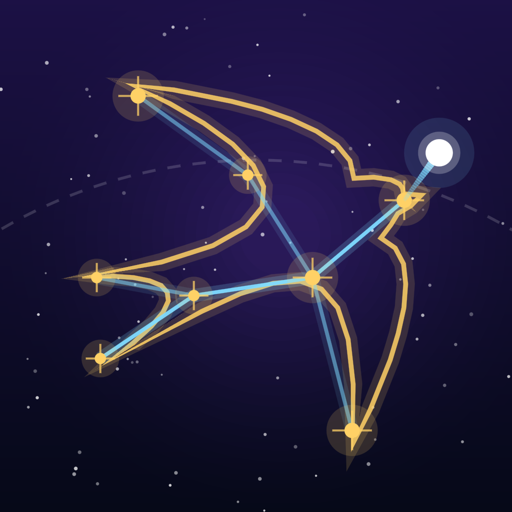

Privacy Policy
Skydraw — one-tap space arcade for iPhone
English
Effective date: November 11, 2026
Skydraw does not collect any data.
- No accounts, no tracking, no ads, no analytics. Skydraw has no sign-in, contains no third-party SDKs and works without an internet connection.
- Your progress stays on your device. Scores, stars, skins, missions, the atlas and your daily streak are saved only on your iPhone. Deleting the app deletes them.
- Device state is checked locally. The game looks at Low Power Mode, device temperature and whether other audio is playing, to lower the frame rate or mute its own music. This never leaves your phone.
- Notifications are local. If you allow them, the game schedules reminders on your phone (for example, that today's daily challenge is waiting). No server is involved. You can turn them off in iOS Settings at any time.
- Sharing. Share opens the standard iOS share sheet with a picture and text of your result. Nothing is sent unless you choose where to send it.
- Photos. If you choose "Save Image", iOS asks for permission to add the picture to your Photos. Skydraw can only add images; it cannot see your library.
- Apple. If you opted in to share analytics with app developers in iOS settings, Apple may provide aggregated, anonymous crash and usage statistics. This is controlled by Apple and your device settings.
- Contacts, location, camera, microphone: Skydraw does not request access to them.
- Children. Skydraw collects no data from anyone, including children.
- Changes. If this ever changes (for example, ads or analytics), this policy will be updated before the app update that changes it.
Contact: assylbek.zakrikchinov@gmail.com
Русский
Действует с 11 ноября 2026 г.
Skydraw не собирает никаких данных.
- Без аккаунтов, слежки, рекламы и аналитики. В Skydraw нет входа и сторонних SDK, игра работает без интернета.
- Прогресс остаётся на вашем устройстве. Очки, звёзды, скины, задания, атлас и серия дней хранятся только на iPhone. Если удалить приложение, они удалятся вместе с ним.
- Состояние телефона проверяется на месте. Игра смотрит на режим энергосбережения, нагрев и то, играет ли другая музыка, чтобы снизить частоту кадров или выключить свою музыку. Эти сведения никуда не уходят.
- Уведомления локальные. Если вы их разрешите, игра ставит напоминания на самом телефоне (например, что ждёт ежедневный челлендж). Сервер не участвует. Выключить их можно в настройках iOS в любой момент.
- «Поделиться». Кнопка открывает стандартное окно iOS с картинкой и текстом результата. Ничего не отправляется, пока вы сами не выберете, куда.
- Фото. Если выбрать «Сохранить изображение», iOS спросит разрешение на добавление картинки в Фото. Skydraw может только добавлять изображения и не видит вашу медиатеку.
- Apple. Если в настройках iOS вы разрешили делиться аналитикой с разработчиками, Apple может передавать обобщённую анонимную статистику падений и использования. Это решает Apple и ваши настройки.
- Контакты, геопозиция, камера, микрофон: Skydraw не запрашивает к ним доступ.
- Дети. Skydraw ни у кого не собирает данных, в том числе у детей.
- Изменения. Если это когда-нибудь изменится (например, появится реклама или аналитика), политика обновится до выхода версии с изменением.